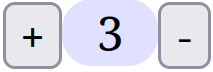
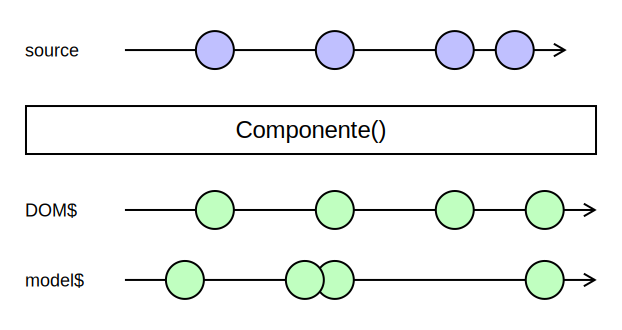
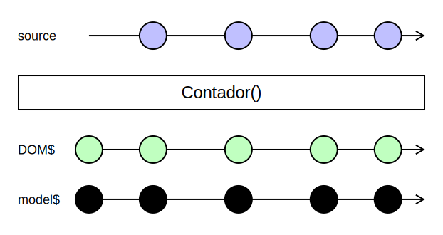
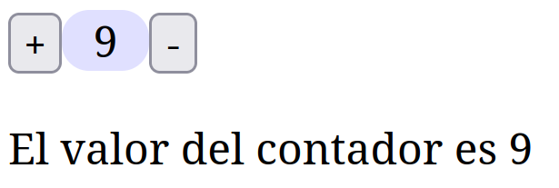
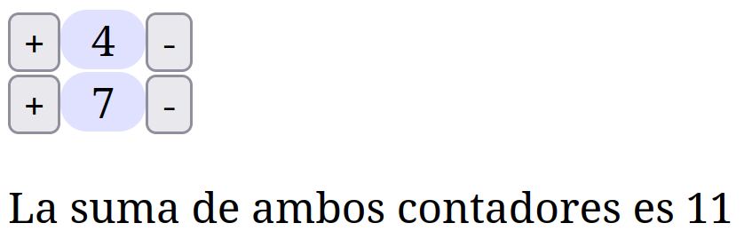
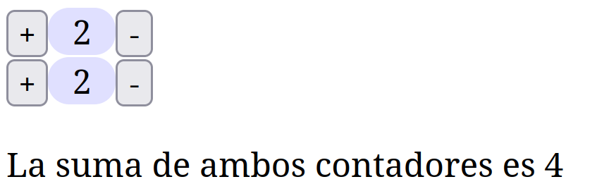

Componentes en Cycle.js
Programación Declarativa Aplicada
Máster en Ingeniería Informática
Facultad de Informática
Universidad Complutense de Madrid
Máster en Ingeniería Informática
Facultad de Informática
Universidad Complutense de Madrid
- Creación de un componente
- Uso de un componente
- Aislamiento de componentes
- La función
isolate()
Creación de un componente
Componentes en Cycle.js
- Un componente es un fragmento de interfaz gráfica diseñado para ser reutilizable.
- Durante esta semana hemos implementado una aplicación web sencilla que implementaba un contador.

- A continuación, vamos a convertir este contador en un componente.
Arquitectura Cycle.js
- Recordemos que una aplicación Cycle.js es una función
main()que transforma sources en sinks.

Componente Cycle.js
- Un componente también es una función que transforma sources en sinks.

Sources y sinks de un componente
- Un componente puede tener varios sources:
- Un source
DOM, que permite obtener los eventos de la interfaz de usuario. - Otros sources que definen las propiedades de ese componente.
- Un source
- Con respecto a los sinks, un componente puede tener:
- Un sink
DOM, que emite el fragmento de DOM virtual correspondiente a ese componente. - Otros sinks que emiten el modelo de ese componente.
- Un sink
Ejemplo: contador
- En nuestro ejemplo tendremos:
- Un source (
DOM), con el que obtenemos los eventos de pulsación en los botones+y-. - Un sink (
DOM), con el fragmento de DOM correspondiente al contador. - Un sink (
value), con el valor del contador.
- Un source (

Recordatorio: código del contador
- Función
intent():function intent(sources) { const evtIncrementar$ = sources.DOM.select('button.incrementar').events('click'); const evtDecrementar$ = sources.DOM.select('button.decrementar').events('click'); const incrementar$ = evtIncrementar$.pipe(map(evt => +1)); const decrementar$ = evtDecrementar$.pipe(map(evt => -1)); return merge(incrementar$, decrementar$); } - Función
model():function model(accion$) { return accion$.pipe( scan((estado, accion) => reducer(estado, accion), 0), startWith(0) ); } function reducer(estado, accion) { return estado + accion; }
Recordatorio: código del contador
- Función
view():function view(estado$, context) { return estado$.pipe( map(contador => <div> <button class={{ incrementar: true }}>+</button> <div class={{ contador: true }}>{contador}</div> <button class={{ decrementar: true }} attrs={{ disabled: contador === 0 }}>-</button> </div> ) ); } - Función
main():
function main(sources) {
return { DOM: view(model(intent(sources))) };
}
Convertir el contador en un componente
- Basta con cambiar el nombre de la función
mainpor el nombre del componente, y devolver, además delDOM, otro sinkvaluecon el valor del contador:function Contador(sources) { const state$ = model(intent(sources)); return { DOM: view(state$), value: state$ }; } - Por convenio, las funciones que denotan componentes comienzan por letra mayúscula.
Convertir el contador en un módulo JavaScript
- Podemos añadir
export defaulta la definición de función para que pueda utilizarse desde otros módulos:export default function Contador(sources) { ... } - De este modo, podemos importar el componente desde cualquier otro módulo del proyecto:
import Contador from './Contador.jsx';
Uso de un componente
Uso del contador
// Fichero main.js
...
import Contador from './contador.jsx'
function main(sources) {
const { DOM: contadorDOM$, value: contadorValue$ } = Contador(sources);
const dom$ = combineLatest(contadorDOM$, contadorValue$).pipe(
map(([contadorDOM, contadorValue]) =>
<div>
{contadorDOM}
<p>El valor del contador es {contadorValue}</p>
</div>
)
);
return { DOM: dom$ };
}
Uso del contador

Aislamiento de componentes
Ejemplo: dos contadores
- Partiendo del ejemplo anterior, supongamos que queremos utilizar dos contadores en nuestra página, y mostrar la suma de sus valores.

Ejemplo: dos contadores
function main(sources) {
const { DOM: contador1DOM$, value: contador1Value$ } = Contador(sources);
const { DOM: contador2DOM$, value: contador2Value$ } = Contador(sources);
const suma$ = combineLatest([contador1Value$, contador2Value$]).pipe(
map(([x, y]) => x + y)
);
const dom$ = combineLatest([contador1DOM$, contador2DOM$, suma$]).pipe(
map(([contador1DOM, contador2DOM, contadorValue]) =>
<div>
{contador1DOM}
{contador2DOM}
<p>La suma de ambos contadores es {contadorValue}</p>
</div>
)
);
return { DOM: dom$ };
}
Resultado

- ¡Ambos contadores se incrementan y decrementan simultáneamente!
- Si hacemos clic en el botón
+de uno de ellos, se incrementan ambos. - El mismo comportamiento con el botón
-.
Explicación
- Este es el DOM generado por la aplicación:
<div> <div> <button class="incrementar">+</button> <div class="contador">1</div> <button class="decrementar">-</button> </div> <div> <button class="incrementar">+</button> <div class="contador">1</div> <button class="decrementar">-</button> </div> <p>La suma de ambos contadores es 1</p> </div>
Explicación
<div>
<div>
<button class="incrementar">+</button>
<div class="contador">1</div>
<button class="decrementar">-</button>
</div>
<div>
<button class="incrementar">+</button>
<div class="contador">1</div>
<button class="decrementar">-</button>
</div>
<p>La suma de ambos contadores es 1</p>
</div>
- Para capturar los eventos sobre el botón
+, utilizamos el selector.incrementar, pero hay dos botones que encajan con ese selector. - Similarmente con los selectores
.decrementary.contador.
Explicación
function intent(sources) {
const evtIncrementar$ = sources.DOM.select('button.incrementar').events('click');
// ...
}
- Por tanto, cuando se pulsa el botón
+en uno de los contadores, los observablesevtIncrementar$de todos ellos emiten un evento.
Solución
- Asociar al DOM de cada componente un identificador único, al que llamaremos contexto.
- El DOM generado por la aplicación ha de ser el siguiente:
<div> <div id="cont1"> Contexto del primer contador <button class="incrementar">+</button> <div class="contador">1</div> <button class="decrementar">-</button> </div> <div id="cont2"> Contexto del segundo contador <button class="incrementar">+</button> <div class="contador">1</div> <button class="decrementar">-</button> </div> <p>La suma de ambos contadores es 1</p> </div>
Solución
- Cada vez que se crea un componente, se indica su contexto correspondiente.
function main(sources) {
const { DOM: contador1DOM$, value: contador1Value$ } = Contador(sources, 'cont1');
const { DOM: contador2DOM$, value: contador2Value$ } = Contador(sources, 'cont2');
...
}
Contador con contexto
- La función
Contadorrecibe un contexto como parámetro, y restringesources.DOMantes de pasárselo a la funciónintent():export default function Contador(sources, context) { const sourcesRestricted = { ...sources, DOM: sources.DOM.select(`#${context}`) }; const value$ = model(intent(sourcesRestricted)); return { DOM: view(value$, context), value: value$ }; } - Aplicamos el selector
#context, que selecciona el elemento del DOM que tengacontextcomo identificador. - De este modo, source recibido por la función
intent()corresponde al DOM del componente, en lugar de corresponder a la página entera.
Contador con contexto
- La llamada
select('button.incrementar')que realiza la funciónintent()se realiza sobre un documentosources.DOMque solo contiene el DOM del componente.function intent(sources) { Solo recibe el <div> del componente const evtIncrementar$ = sources.DOM.select('button.incrementar').events('click'); // ... } - Por tanto, cada contador captura solamente los eventos de su DOM, y no los del otro contador.
Contador con contexto
- También hay que modificar la función
view, que ahora recibe el contexto como parámetro,
y lo añade como identificador del componente:export default function Contador(sources, context) { const sourcesRestricted = { ...sources, DOM: sources.DOM.select(`#${context}`) }; const value$ = model(intent(sourcesRestricted)); return { DOM: view(value$, context), value: value$ }; }function view(estado$, context) { return estado$.pipe( map(contador => <div attrs={{id: context}}> ... </div> ) ); }
La función isolate()
Alternativa: isolate()
- Hemos añadido un atributo
idúnico al DOM de un componente para que las distintas instancias de ese componente no interfieran entre sí. - Sin embargo, este mecanismo puede implementarse de manera genérica, para que pueda aplicarse a cada componente.
- La biblioteca
@cycle/isolateproporciona este mecanismo, pero no funciona correctamente con RxJS. - No obstante, puede implementarse de manera sencilla para que funcione con RxJS.
Función isolate()
Módulo isolate.js
import { map } from 'rxjs';
export default function isolate(Component, context) {
return sources => {
const sourcesRestricted = {...sources, DOM: sources.DOM.select(`#${context}`)};
const sinks = Component(sourcesRestricted);
const newDOM$ = sinks.DOM.pipe(map(dom => {
dom.sel += `#${context}`;
return dom;
}));
return {...sinks, DOM: newDOM$};
}
}
Uso de la función isolate()
function main(sources) {
const { DOM: contador1DOM$, value: contador1Value$ } = isolate(Contador, 'c1')(sources);
const { DOM: contador2DOM$, value: contador2Value$ } = isolate(Contador, 'c2')(sources);
...
}
Contextos autogenerados
- Es posible modificar
isolatepara que genere un nuevo contexto cada vez que es llamada, si el programador no ha especificado uno:var contextCounter = 0; export default function isolate(Component, context) { if (context === undefined) { context = `ctx${contextCounter++}`; } return sources => { const sourcesRestricted = {...sources, DOM: sources.DOM.select(`#${context}`)}; const sinks = Component(sourcesRestricted); const newDOM$ = sinks.DOM.pipe(map(dom => { dom.sel += `#${context}`; return dom; })); return {...sinks, DOM: newDOM$}; } }
Contextos autogenerados
function main(sources) {
const { DOM: contador1DOM$, value: contador1Value$ } = isolate(Contador)(sources);
const { DOM: contador2DOM$, value: contador2Value$ } = isolate(Contador)(sources);
...
}
Bibliografía
- Cycle.js
Cycle.js guide: components
https://cycle.js.org/components.html